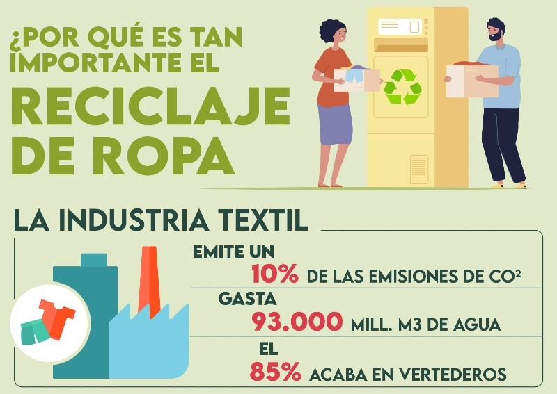

Reciclaje Solidario de Ropa
Millones de personas en situación vulnerable pueden beneficiarse del reciclaje responsable de ropa. En lugar de desechar prendas, podemos darles una segunda vida al entregarlas limpias y en buen estado para que otras personas las reutilicen. A continuación, te contamos por qué es tan importante esta práctica solidaria y cómo puedes contribuir.
Ropa para ayudar, no para contaminar
La industria de la moda tiene un fuerte impacto ambiental, pero también social. Gran parte de la ropa que se tira podría ser reutilizada por personas que la necesitan. Al donar ropa limpia y en buen estado, reducimos la contaminación y apoyamos a comunidades desfavorecidas.
¿Sabías que...?
- Cada año, millones de toneladas de ropa en buen estado terminan en vertederos.
- Donar ropa puede reducir significativamente el uso de recursos naturales como el agua y la energía.
- Una sola prenda bien cuidada puede ser útil para más de una persona durante años.
¿Cómo puedes donar tu ropa usada?
- Lava y revisa que la ropa esté en buen estado antes de donarla.
- Entrega tus prendas en centros de acopio solidario u organizaciones benéficas locales.
- Consulta campañas de recogida de ropa organizada por ONGs, iglesias o centros comunitarios.
- Algunas tiendas de ropa también reciben prendas usadas para proyectos solidarios.
